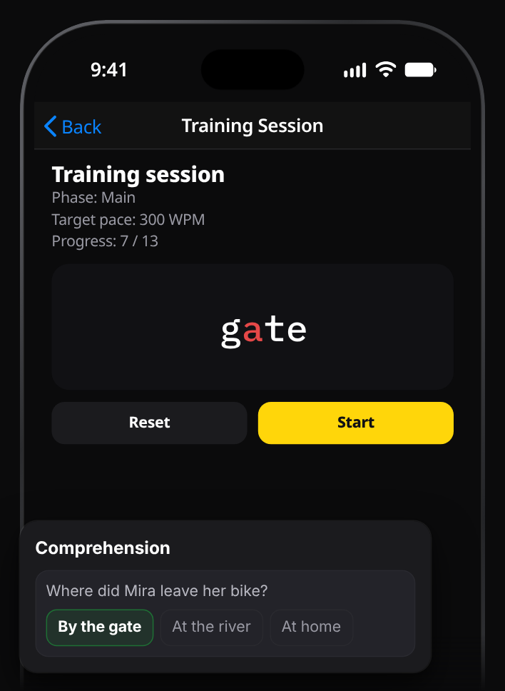
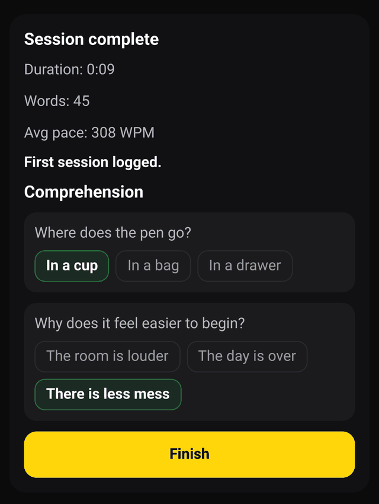

A daily reading focus practice, one word at a time
If your attention slides off the page after a paragraph, a long practice plan won't help much. A small one you actually do every day might. WordBlip is a reading focus app for iPhone built around exactly that: a short session that shows text one word at a time, at a pace you set, and then asks what you understood.

What a session looks like
A short demo that shows the sentence “Each word appears in the same spot, lined up on a red focus letter.” one word at a time.
Open the Training tab and set a comfortable baseline pace once. Before each session WordBlip shows the plan, for example "Warm-up at 200 WPM, then main run at 250 WPM", and how long it should take. Then:
- Warm-up. A short passage, a little below your baseline, to settle in.
- Main run. A slightly longer passage at your training pace. Each word appears in the same spot, lined up on a red focus letter.
- Check. One or two questions about what you just read.
That's it. On Easy, the passages are a few sentences each, so a session fits into a coffee break. Your next main run follows your score: one step up when you got everything right, one step down when you didn't. The aim is a pace where the text still makes sense, not a high number.

A simple daily routine
You don't need a system. This is enough:
- Same time, same place. Tie it to something you already do: the first coffee, the commute, the last thing before bed.
- Silence the phone first. Turn on Do Not Disturb or one of your iPhone's Focus modes, so a notification doesn't cut into the session.
- Do one training session. Easy is free and a good place to start. Answer the questions honestly; guessing only moves the pace in the wrong direction.
- Then read something of your own. Paste an article or a page into the reader (free), or put the phone down and read on paper for five minutes.
- Glance at Progress once a week. It shows your recent sessions and WPM over time. Use it to notice whether the routine is sticking, not to judge yourself.
Missed a day? Do the next one. Your sessions stay saved.
How to focus while reading, without an app
Plenty of what helps is plain common sense, and most of it costs nothing:
- Decide why you're reading before you start: to enjoy it, to find one answer, or to remember the main points.
- Read in short blocks and stop while you're still following, rather than pushing through on autopilot.
- Put the phone in another room when you read on paper, or use Focus on your iPhone when you read on screen.
- Check yourself. At the end of a section, say the main point in one sentence. If you can't, go back.
- Slow down for hard text. A difficult paragraph deserves a second read.
WordBlip builds the last three into the session: short passages, a pace you control, and a question at the end. If you'd rather read your own books this way, see reading EPUB books one word at a time (a Pro feature).
What's free
Free
- Easy training with comprehension questions, up to 350 WPM.
- Pasting your own text into the reader, up to 350 WPM.
- Your recent progress.
Pro
Pro adds Medium and Hard training, paces above 350 WPM, EPUB and TXT import with a Library, and your full progress history.
WordBlip shows the Pro screen on its own once, after your first training session; close it and the free routine keeps working.
Start the free routine on the App Store
FAQ
How long does a session take?
On Easy, a session is a couple of short passages and one or two questions. The Training tab shows the estimated time before you start.
Do I have to train every day?
No. "Daily" is a suggestion. A short session most days is easier to keep up than a long one now and then.
Is this a speed reading app?
It's often called a speed reading app, but the training is about reading at a pace where you still understand the text. The questions after each session are there to keep that honest.
What if I keep getting the questions wrong?
Then the next run steps down. That's the system working, not failing.
Does it remind me to practice?
No. Pair the session with something you already do every day.
What is RSVP?
Rapid serial visual presentation: one word at a time in one spot. More in what an RSVP reader app does.